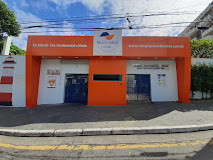

Missão
Promover apoio pedagógico e afetivo para estudantes do Fundamental I que enfrentam dificuldades em leitura, escrita e matemática.

Escola Paulo de Tarso
O projeto Caminho Solidário une alunos, professores e famílias para apoiar o aprendizado e ampliar a inclusão social na comunidade escolar.

Uma iniciativa que aproxima estudantes, voluntários e famílias para fortalecer o aprendizado, promover inclusão e construir práticas de cuidado dentro da escola.
Promover apoio pedagógico e afetivo para estudantes do Fundamental I que enfrentam dificuldades em leitura, escrita e matemática.
Construir uma escola mais inclusiva onde cada aluno se sinta apoiado por professores e voluntários da própria comunidade.
Solidariedade, respeito, cooperação e desenvolvimento sustentável por meio da educação.
Educação e Inclusão: fortalecer a aprendizagem de estudantes em situação de vulnerabilidade através de reforço escolar e atividades lúdicas.
O Caminho Solidário reúne encontros semanais na sala multimídia e no pátio para reforço em leitura, escrita, matemática e suporte emocional.
Voluntários ajudam a reduzir a evasão escolar e a aumentar a confiança dos estudantes, tornando a escola um espaço de crescimento real.
O Colégio Paulo de Tarso foi fundado em 1982. A instituição iniciou oficialmente as suas atividades de registro em 15 de março de 1982 e hoje é referência em ensino sólido com foco no desenvolvimento integral dos estudantes.
Endereço: Rua Mazzini, 61 - Cambuci, São Paulo - SP. Telefone / Contato: (11) 3729-7060. Site Oficial: Acesse o Portal do Colégio Paulo de Tarso para mais detalhes e matrículas.